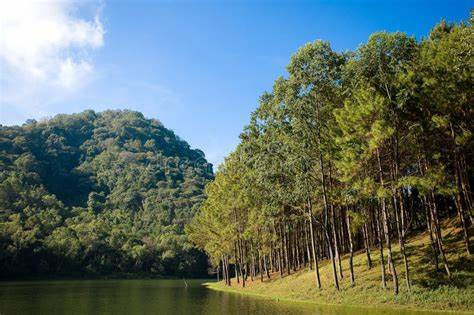

ตั้งอยู่ที่ตำบลหมอกจำแป่ อำเภอเมือง จังหวัดแม่ฮ่องสอน ซึ่งแต่เดิมพื้นที่ดังกล่าวมีการทำไร่เลื่อนลอย ปลูกฝิ่น และตัดไม้ทำลายป่าเป็นบริเวณกว้าง จากนั้นพระบาทสมเด็จพระปรมินทรมหาภูมิพลอดุลยเดช มีพระราชดำริให้รวบรวมราษฎรบริเวณนั้น พร้อมกับพัฒนาความเป็นอยู่ ส่งเสริมอาชีพปลูกป่า สร้างอ่างเก็บน้ำ และฟื้นฟูอนุรักษ์ทรัพยากรธรรมชาติให้สมบูรณ์ยั่งยืน
ปัจจุบันปางอุ๋งกลายเป็นแหล่งปลูกพืชที่น่าสนใจหลายชนิด และมีกิจกรรมให้นักท่องเที่ยวได้ทำมากมาย เช่น ตื่นมาดูหมอกยามเช้า เดินชมดอกไม้ ล่องแพชมธรรมชาติ เป็นต้น โดยนักท่องเที่ยวสามารถเลือกไปเที่ยวแบบไปเช้า-เย็นกลับ หรือจะไปพักแบบค้างแรมก็ได้
